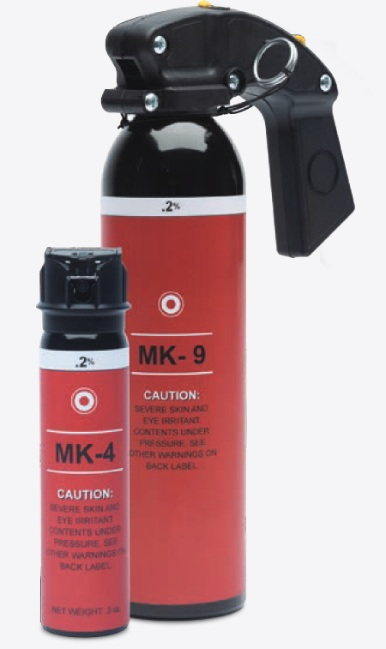
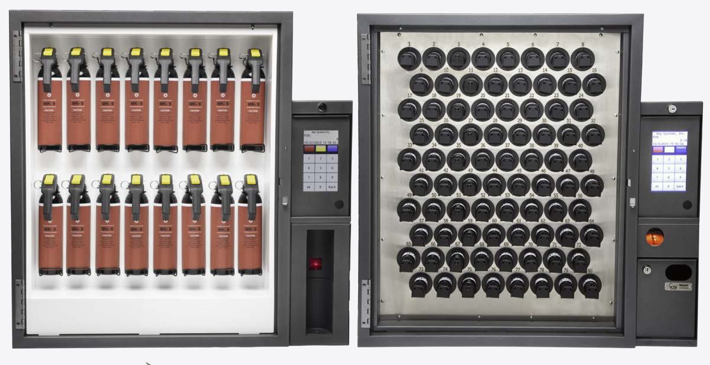
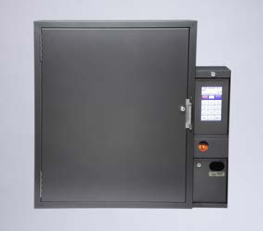
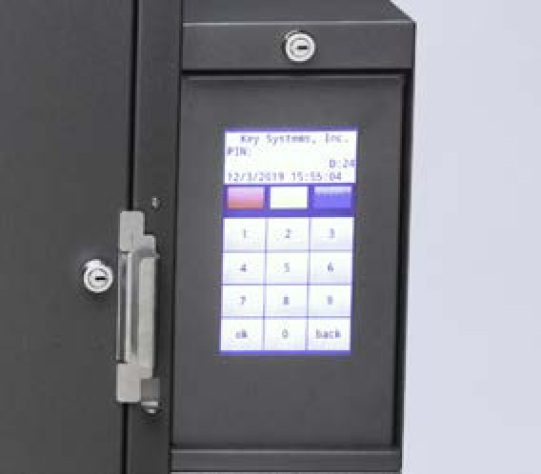
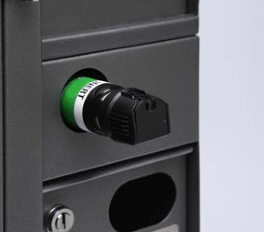
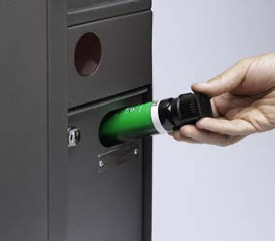
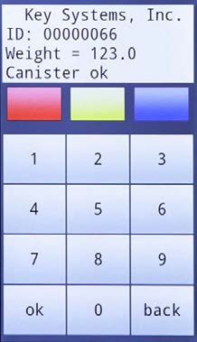

Productgegevens van de fabrikant · Key Systems, Inc.
OC Spray Station
MK-4- en MK-9-kasten · leverbaar in meerdere maten

Bescherm uw bezittingen · Leverbaar in meerdere maten
Key Systems, Inc. is een vernieuwende partij op het gebied van veiligheids- en beschermingsproducten in gevangenissen en penitentiaire inrichtingen. De KSI OC Spray Station zorgt voor veilig hanteren en beheersen van OC-spray en bevestigt dat de bussen op het opgegeven gewicht zijn. Het station biedt beheerde uitgifte, opslag, het uit dienst nemen en gedetailleerde rapportage voor chemische spuitbussen. Elk station is netwerkgereed voor het op afstand programmeren van rechten en levert realtime transacties aan GFMS (Global Facilities Management System™-software).

MK-4 en MK-9 — de twee busformaten waarvoor de kasten zijn uitgevoerd.

In beeld

Gesloten kast met besturingskolom

Identificatie met pincode

Bus in positie, afvoervak eronder

Afvoeren van een bus
OC Spray Station · Kenmerken, weging en maatspecificaties
Kenmerken
-
Bevestigt dat de bussen geladen zijn
De bus wordt gewogen door onze interne weegschaal en daarna beoordeeld voor dienst of voor afvoer.
-
Rapportage
OC-bussen zijn afzonderlijk geïdentificeerd. Onze software maakt het mogelijk gebruik te volgen, tijdzones aan te maken, meldingen per e-mail te sturen en andere controles en rapportages uit te voeren.
-
Meerdere maten
MK-4-kasten bieden plaats aan 24, 48 of 80 OC-bussen. De MK-9-kast biedt plaats aan 16 OC-bussen.
-
Gebruikersidentificatie
Mogelijkheden voor gebruikersidentificatie zijn pincode, pas door de lezer, proximity en biometrie.
-
Afvoer
MK-4-kasten hebben een aparte sectie voor het afvoeren van bussen.
-
Integreert met GFMS
Gebruikers en groepen worden automatisch overgenomen in de GFMS-software, waardoor invoerwerk vervalt en u synchroon blijft met uw bestaande toegangscontrole.

Weging op het display
Bij inname weegt de interne weegschaal de bus. Het display toont het busnummer en het gewicht, en meldt of de bus in orde is.
Koppel met uw toegangscontrole
Global Facilities Management System™ verwijst niet naar een specifiek beveiligingsapparaat of een losse toepassing, maar naar uw volledige installatie van Key Systems die als één systeem samenwerkt. Al onze elektronische middelenbeheerapparaten zijn ontworpen om onderdeel te zijn van uw GFMS™-oplossing.
Maatspecificaties
| Kast | Capaciteit | b × h × d (inch) | b × h × d (cm) |
|---|---|---|---|
| MK-4 | 24 bussen | 24,25 × 25 × 8″ | 62 × 64 × 20 cm |
| MK-4 | 48 bussen | 34,3 × 25 × 8″ | 87 × 64 × 20 cm |
| MK-4 | 80 bussen | 34,3 × 33,875 × 8″ | 87 × 86 × 20 cm |
| MK-9 | 16 bussen | 34,3 × 33,875 × 8″ | 87 × 86 × 20 cm |
Maten in inches volgens de fabrikant; centimeters omgerekend en afgerond. Maatvoering onder voorbehoud.